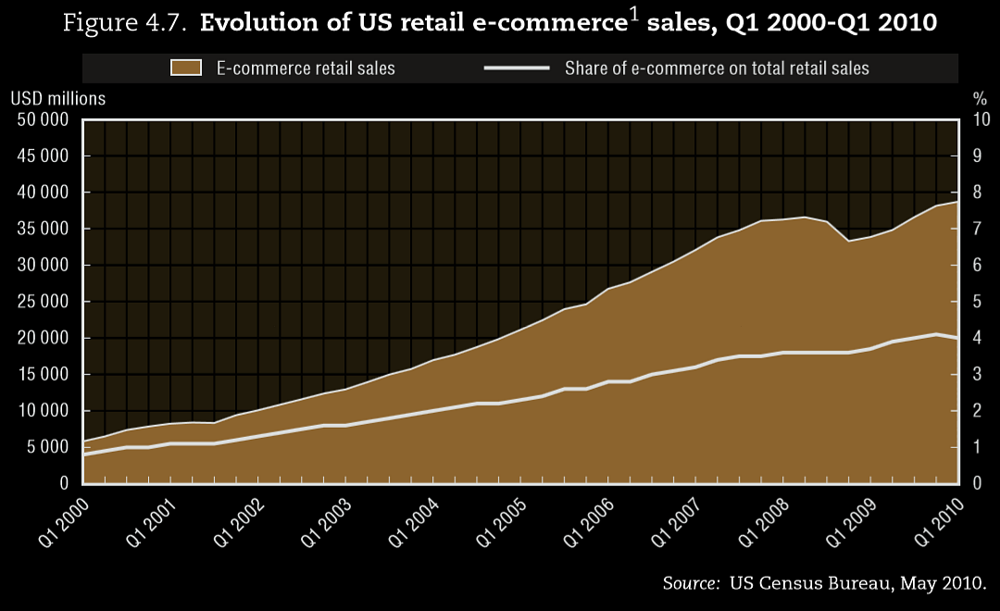
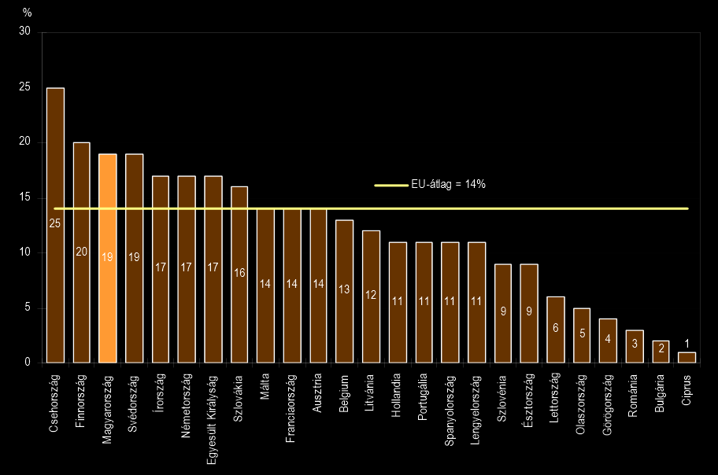
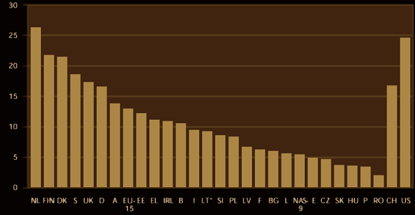

Új fejlődési tendenciák a világgazdaságban
Összehasonlító Gazdaságtan prezentáció
Polgár Mátyás · Szmozsánszky István
Budapesti Corvinus Egyetem
Miről lesz szó?
- E-kereskedelem, webes piacok kialakulása
- Online elektronikus piacterek
- Információs technológiai és munkapiaci átalakulás
- Nem hagyományos foglalkoztatási formák, távmunka
- Az információs technológia társadalmi következményei
Globalizáció és Internet
- A '80-as években erős informatizálási hullám
- Zsugorodó világ, globális hálózatok kiépülése
- Áruk és szolgáltatások kiterjedt nemzetközi kereskedelme
- Az információ fénysebességgel terjed az elektronikus hálózatokon
Internetforgalom napjainkban
Elektronikus kereskedelem
Az e-kereskedelem részei:
- áruk és szolgáltatások elektronikus forgalmazása,
- elektronikus pénzátutalás és fizetés,
- elektronikus értékpapír-kereskedelem,
- digitális fuvarlevelek kiállítása és nyilvántartása,
- kereskedelmi árverések lebonyolítása,
- direkt-marketing és ügyfélszolgálati tevékenység
Nincs egyértelmű megfogalmazás, a legszűkebbtől (a tranzakció néhány eleme digitalizált) a legtágabbig (e-business) többféle értelmezés létezik.
Az e-kereskedelem kiterjedése 
E-kereskedelem itthon
Elektronikus értékesítésből származó árbevétel aránya (EU,2010)
- Számos új belépő (Tesco, MediaMarkt) a piacon
- Akár 50-60%-os bővülés is várható 2013-ban
Hagyományos- és e-kereskedelem
Versenyelőnyök- és hátrányok
| Előnyök | Hátrányok |
|---|---|
Alacsony tranzakciós költségeklebomló tér- és időbeli korlátok |
Fizikai függőségnem digitális termékek esetén |
Szélesebb piacokjobban érvényesülő piaci verseny |
Lokális korlátokA helyi szabályozás korlátai |
Vásárlókövetésátfogóbb információk a célpiacról |
Információs
|
Részletesebb
Az extra kényelemért a vásárló hajlandó érte többet fizetni
|
Sok esetben
Bizonyos termékcsoportokban
|
Csatornák összehasonlítása
| Hagyományos | E-kereskedelem |
|---|---|
| Időben behatárolt hozzáférés, limitált belépés - többnyire lokális piacokra | Térben és időben korlátlan, folyamatos hozzáférés globális piacokhoz |
| Szegényes, nem naprakész termékinformáció | Folyamatosan frissülő, nagy mennyiségű termékinformáció |
| Hosszadalmas és nehézkes információszerzés | Könnyű hozzáférés nagy mennyiségű információhoz, a szelektálás problémája |
| Magas tranzakciós költségek, lassú és időigényes tranzakciók | Alacsony tranzakciós költségek, valós idejű vásárlás, de lassú teljesítés |
Elektronikus piacterek
E-piacterek
Céljuk rendkívül nagy számú eladó és vevő
egyetlen központi online térbe való integrálása.
egyetlen központi online térbe való integrálása.
- Nagyfokú kialakuló verseny a termelők közt - leszorított profitok
- Változatos piaci struktúrák jellemzik (pl.: direkt és fordított aukciók)
- A nagy számú résztvevő miatt csökkenő tranzakciós költségek
Osztályozás
Független |
Ipari konzorciumok által működtetett |
Nyitottmindenki számára hozzáférhető(akik betartják a piac szabályait) |
Zártbizonyos vevők/eladókférnek csak hozzá |
Vertikálisadott iparágra koncentrálnak |
Horizontálisvállalatok/felhasználók egymás közötti kereskedését szolgálják |
Az online és offline piacok összeolvadása
- Többcsatornás értékesítés – Clicks-and-mortar modell
- A hagyományos és elektronikus csatornák ötvözete
- Hatékonyabb értékesítési módszer, mint a hagyományos/e-kereskedelem önmagában
- A vásárlás adott fázisához a fogyasztó mindig a leghatékonyabb(nak vélt) csatornát választja
- Egyre több hagyományos kereskedő nyit elektronikus áruházat, míg az e-kereskedők a fizikai csatornák felé terjeszkednek
E-kereskedői modellek
- Az egyik első (1996-ban alapították) és legsikeresebb online piactér
- Aukciós házként indult, de azóta értékesítési csatornaként is legalább annyira népszerű
- 2012-ben 14 milliárd dolláros bevétel (2,6 milliárd dollár profit)*
- A cég 2002-ben felvásárolta az egyik legnagyobb online fizetési platformot, a PayPal-t
- Számos hasonló profilú cég van a piacon, de az egyetlen igazi versenytársa az Amazon.com
- Magyarországon a Vatera és néhány kisebb cég kínál hasonló szolgáltatást
- Online könyvesboltként indult útjára 1994-ben, napjainkra a legnagyobb e-commerce platform a világon
- Ezen kívül felhő-szolgáltató, a világ legnagyobb kiadója és e-könyv áruháza és az egyik legnagyobb médiaszolgáltató
- Először profitot az indulás utáni 7. évben, 2001-ben termelt. Mára (2012) több mint 61 milliárd dolláros forgalmat bonyolít*
- Magyarországon hasonló a Shopline akik szintén könyvértékesítésből (Bookline) bővítették portfoliójukat a legkülönbözőbb termékek online értékesítésére
- 1919-ben alapított brit bolthálózat, amely időközben a világ második (bevétel alapján 3.) legnagyobb áruházláncává nőtte ki magát
- 14 országban van jelen, 2000 óta online áruházat üzemeltet
- 2012-ben 2806 milliárd fontos profitot termelt, amivel a Walmart áruházlánc után a második legnagyobb áruházlánc*
- A cég 1994 óta van jelen Magyarországon, több mint 200 áruházzal
- 2013-ban Magyarországon is elindult online vásárlási szolgáltatása a bevasarlas.tesco.hu oldalon

- 2003-ban hozta létre az Apple Inc. "iTunes Music Store" néven
- 2010-re a világ legnagyobb online zenei áruháza, 2013-ra eléri a rekord mennyiségű, 25 milliárd zeneszám-eladást*
- Folyamatosan bővülő portfolióval az egyik legnagyobb online media outlet (zene, videó, film, játékok/alkalmazások, e-könyvek stb.)
A foglalkoztatási modell változása
| Indusztriális | Posztindusztriális |
|---|---|
Humántőke specifikusLearning-by-doing modell Kétoldalúan merev munkaviszonyösztönzők hosszútávú munkaviszony fenntartására Alacsony
|
Megváltozott piaci környezetErőteljes digitalizálódásDestabilizáló
|
Atipikus foglalkoztatás:
A Távmunka
Elterjedésének okai
- Információs technológiai forradalom
- Globalizálódó munkapiac
- Földrajzi és infrastrukturális adottságok
- Formái: Ipari távmunkás, Teleadminisztrátor, Távszakértő (telemenedzser)
Távmunka végezhető otthon, út közben vagy akár lokális távmunka-központokban (outsourcing).
A távmunka Magyarországon
Távdolgozók aránya az Európai Unió országaiban (EU, 2003)
- Elenyésző magyar távmunkás réteg (4%, 2003)
- Minimális növekedés tapasztalható csak (8%, 2012)
Munkáltatói szempontok
| Előnyök | Hátrányok |
|---|---|
Rugalmasabb |
Gyengíti a lojalitásta táv- és hagyományos dolgozókét egyaránt |
Alacsonyabb rezsiköltség |
Konfliktust szülheta hagyományos/távdolgozók közt |
Létszámbővítés kis tőkebefektetéssel |
Egyes feladatok nem kivitelezhetőkpl. személyes kapcsolatot igényelnek |
Egyszerűbb szűrésa hibás döntések egyszerűen orvosolhatók |
Gyenge
együttműködés (team munka) kialakítása nehézkes
|
Munkavállalói szempontok
| Előnyök | Hátrányok |
|---|---|
Kevesebb stresszpl.: munkahelyi konfliktusok miatt |
Több stresszpl.: állandó rendelkezésre állás okán |
Családi élet és munka jobb összhangjakönnyebb összeegyeztethetőség |
Gyengülő munkahelyi kohéziónem alakul ki csapathoz tartozás |
Egyéni munkatempókevesebb kieső holtidő (pl. utazás miatt) |
Implicit költségekbizonyos költségek áthárulnak a munkavállalóra |
Társadalmi következmények
Új társadalmi jelenségek
- növekvő bizonytalanság vállalati és munkavállalói oldalon egyaránt
- földrajzi, nemzetiségi, jövedelmi különbségek növekedése
- az angol válik a világháló domináns nyelvévé
- az internet és élethosszig tartó tanulás dominál (főként fiatalabbaknál)
- újszerű vállalati struktúrák (“hands off” és “flat”)
Összefoglalva
- Az információs technológia rohamléptekben alakítja át a gazdaságot
- Egyik gazdasági szereplő sincs már "biztonságban", a változások hirtelen jönnek és hatalmas horderejűek
- Az innováció és folyamatos alkalmazkodás alapvető szükségletté válik, hiányuk esetén a vállalat rövid idő alatt kiszorul a piacról
- Átalakulnak a foglalkoztatási és munkafelfogási struktúrák, új munkaszervezési módok lépnek a hagyományos, ipari munkamódszerek helyébe
- A gazdasági változások a társadalmat sem hagyják érintetlenül
Köszönjük a figyelmet!
A diák megtalálhatók:
http://slides.flaki.hu/ohgprez13
2013. 04. 25.
Polgár Mátyás
Szmozsánszky István
Készült a reveal.js keretrendszerrel.
Vitaindító kérdés
Ellehetetlenítik-e a Magyarországra begyűrűző óriásvállalatok a magyar kezdeményezéseket?
vsHivatkozások [1]
-
Szabó Katalin–Hámori Balázs (2006)
Információgazdaság.
Akadémia Kiadó, Budapest. -
Molyzes Imre–Talyigás Judit (2000)
Elektronikus Kereskedelem.
MTA Információ-technológiai Alapítvány, Budapest. - OECD (2010) Information Technology Outlook 2010, OECD Publishing. doi: 10.1787/it_outlook-2010-en
- Központi Statisztikai Hivatal (2012) IKT-eszközök és használatuk, 2012. december, http://www.ksh.hu/docs/hun/xftp/idoszaki/ikt/ikt11.pdf (letöltés: 2013.04.19.)
- HVG.hu (2013. február 18.) Idén kilőhet az online kereskedelem, hvg.hu - 2013. február 18., http://hvg.hu/kkv/20130218_Iden_tarolhat_az_online_kereskedelem/ (letöltés: 2013.04.19.)
Hivatkozások [2]
- US Securities and Exchange Commission (2012) eBay Inc. Financial Statement Results, https://www.google.com/finance?q=NASDAQ:EBAY&fstype=ii (letöltés: 2013.04.21.)
- Amazon.com (2013) Annual Report, http://pdf.secdatabase.com/1562/0001193125-13-028520.pdf (letöltés: 2013.04.21.)
- TESCO (2013) Preliminary Results 2012/13, http://www.tescoplc.com/files/pdf/results/2013/prelim/prelim_2012-13_analyst_pack.pdf (letöltés: 2013.04.21.)
- Apple Inc. (2013) iTunes Store Sets New Record with 25 Billion Songs Sold, http://www.apple.com/pr/library/2013/02/06iTunes-Store-Sets-New-Record-with-25-Billion-Songs-Sold.html (letöltés: 2013.04.21.)
- SIBIS (2003) Total teleworkers – Statistics – Benchmarking the Information Societysibis-eu.org/statistics/data/4-34.htm (letöltés: 2013.04.20.)
- IPSOS (2012) Itthon elenyésző a távmunka, IPSOS Zrt, www.ipsos.hu/site/itthon-eleny-sz-a-t-vmunka (letöltés: 2013.04.20.)